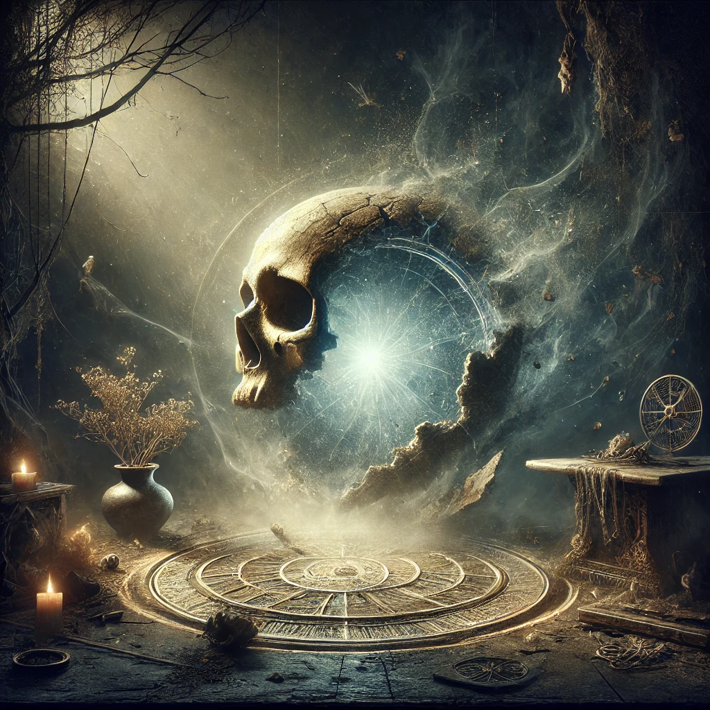

Ich, Samuel Hope, bin spezialisiert auf die Wiederherstellung von Lebenskraft, Bedeutung und Funktion – sei es bei Objekten, Lebewesen oder Materialien. Mit meiner einzigartigen Mischung aus Handwerkskunst, magischen Fähigkeiten und wissenschaftlicher Präzision widme ich mich der Erhaltung und Heilung von allem, was Ihnen am Herzen liegt.
Kunst der Wiederherstellung

Lebenskraft
In meiner Arbeit ist Lebenskraft der Schlüssel zu allem, was existiert. Jedes Wesen, jeder Gegenstand – alles trägt Lebenskraft in sich, die nicht nur das Leben ermöglicht, sondern auch die Identität, Bedeutung und den Zweck eines Objekts oder Wesens bestimmt.
Lebensessenz – Die Geschichte hinter den Dingen
- Herkunft: Die Geschichte eines Gegenstandes beginnt mit seinem Ursprung. Ein einfacher Holzstuhl etwa trägt die Lebensessenz des Baumes, aus dem er gefertigt wurde.
- Erlebte Geschichte: Mit der Zeit reichert sich die Lebensessenz eines Gegenstandes durch Erinnerungen und Erlebnisse an.
Beispiel: Wenn du das Zuhause eines älteren Menschen betrittst, spürst du oft eine besondere Atmosphäre. Diese entsteht durch die gesammelte Lebensessenz der Objekte, die dort über Jahre hinweg ein Teil von Erinnerungen und Erfahrungen geworden sind.
Leere – Der Zustand der Bedeutungslosigkeit
Was verursacht Leere?
- Verlust von Teilen, Funktion oder Identität
- Tiefe emotionale oder physische Schäden
- Abwesenheit von Sinn oder Lebensfreude
- Vernachlässigung und Verfall
- Vergessenheit
- Unnatürliche Einflüsse

Grenzen meiner Magie
- Ermüdung und Erschöpfung: Meine Kraft ist nicht unendlich. Wenn ich zu viel von mir gebe, kann dies meine eigene Lebenskraft gefährden – bis hin zu meinem eigenen „Zerbrechen“.
- Unwiederbringlicher Verlust: Manchmal ist ein Schaden so groß, dass selbst ich ihn nicht reparieren kann.
Besonderheit bei fehlenden Teilen
Wenn ein Teil eines Objekts fehlt, reicht es nicht aus, einfach einen Ersatz zu finden. Der neue Bestandteil muss harmonieren und die gleiche Lebensessenz tragen wie das Original, damit die Wiederherstellung gelingt.
Wichtige Unterschiede
Unterschied zwischen Lebenskraft und natürlichem Altern
Natürliches Altern ist ein unvermeidbarer und natürlicher Prozess, der nichts mit dem Verlust von Lebenskraft an sich zu tun hat. Es ist eher eine langsame, allmähliche Veränderung, die Teil des Lebenszyklus eines Wesens oder Objekts ist.
Unterschied und Verbindung zwischen Heilung von Verletzungen und Heilung von Leere
Lebenskraft dient als energetischer Impulsgeber für den Körper. Wenn die Lebenskraft in einem Wesen stark ist, unterstützt sie die natürlichen Heilungsprozesse und beschleunigt die Regeneration. Der Körper heilt nicht nur schneller, sondern auch umfassender, da die Lebenskraft die Energiebahnen durchdringt und den Fluss der Heilung intensiviert.
Durch den Zustrom an Lebenskraft wird die Regenerationsfähigkeit des Körpers über die normalen Grenzen hinaus gesteigert. Verletzungen, die normalerweise Wochen zur Heilung benötigen würden, schließen sich in Tagen, da die Lebenskraft die körpereigenen Heilungsprozesse potenziert und Gewebe schneller wiederherstellt.
Mein Ziel
Ich, Samuel Hope, sehe es als meine Aufgabe, verlorene Lebenskraft zurückzubringen, Bedeutung wiederherzustellen und die Verbindung zwischen Wesen und Welt zu erneuern.